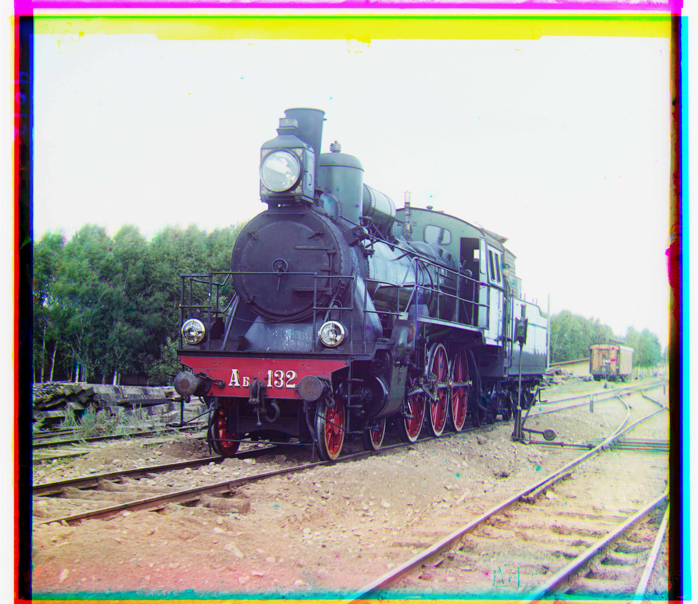
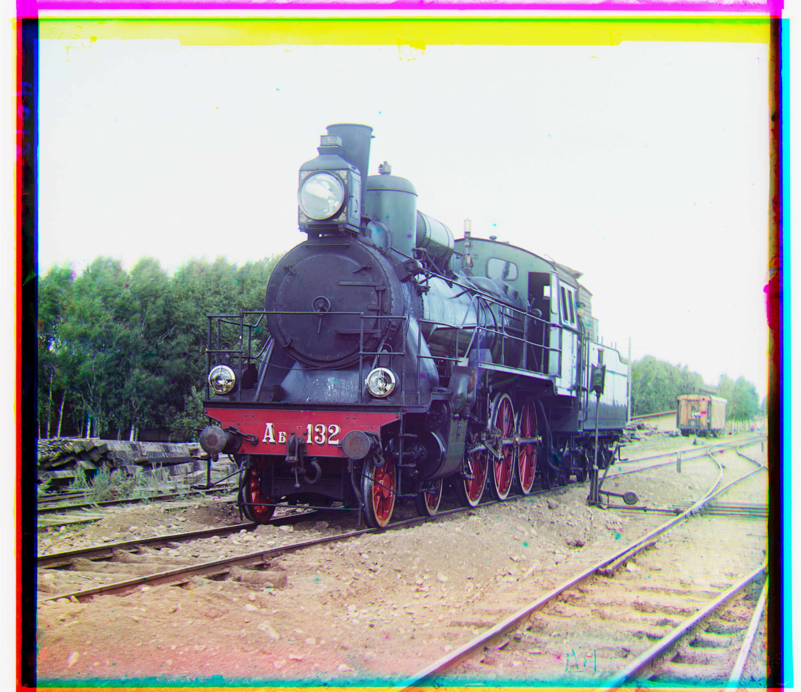

Single Scale Search Approach
[Insert description of the single scale search approach here.]


[Insert your abstract content here.]
[Insert description of the single scale search approach here.]
[Insert description of the multi-scale pyramid search here.]

[Insert description of the challenges faced here.]
The following are the remaining images from the colorized Prokudin-Gorskii photo collection.
 
